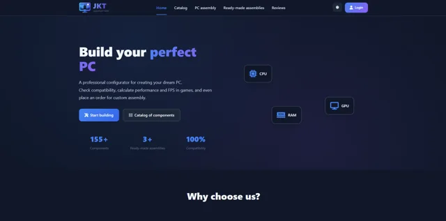
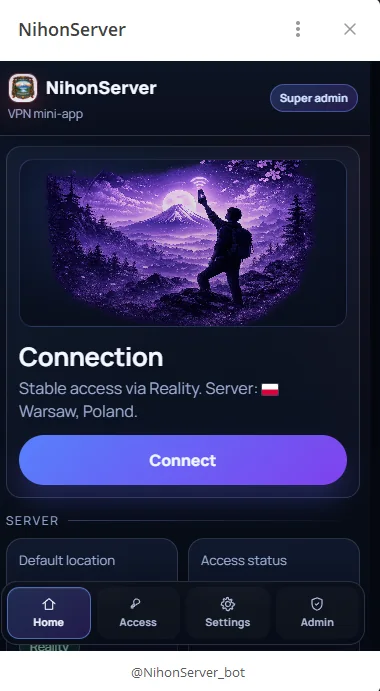
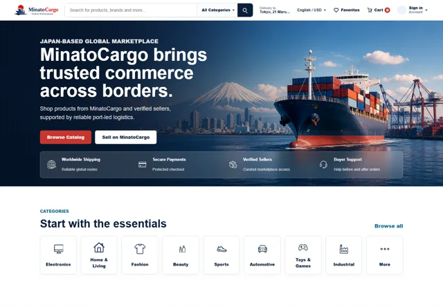

Windows Support
- Windows 7/10/11 installation, setup, and recovery
- Driver issues, software installation, update troubleshooting
- L1/L2 end-user issue handling and incident support
Daniil Kulakov / IT Support Specialist
2+ years of hands-on Windows support, hardware diagnostics and Ubuntu VPS administration.
Open to opportunities

01 / Portfolio
Support, systems & the work in between.
Delivered Windows reinstallations, driver and software setup, hardware diagnostics, and hands-on build or upgrade work across 50+ user systems in real support scenarios.

Set up and maintained a personal website on an Ubuntu VPS using Apache and MySQL, with server access handled through SSH and WinSCP.
Configured a VPN server and supported a Telegram web application on Ubuntu VPS infrastructure, including updates and remote maintenance tasks.

Built a multi-page marketplace with catalog browsing, product pages, seller workspace, admin tools, support flows, localization, currency handling, and content pages.

02 / About me
I provide L1/L2 IT support for Windows-based users, covering operating system issues, application troubleshooting, software setup, hardware diagnostics, and everyday connectivity problems.
Alongside desktop support, I maintain Ubuntu VPS environments with SSH, Apache, MySQL, and WinSCP, giving me practical exposure to Linux administration, hosted services, and routine server upkeep.
IT Support Technician / Junior System Administration Intern
Specialist Diploma completed: June 2026
RussianNative
EnglishB2
JapaneseJLPT N2
03 / Technical skills
04 / Open to opportunities
English resume
PDF · Opens in a new tab
05 / Contact
If you are hiring for IT support, helpdesk, desktop support, or systems support, I am available for remote work and international relocation.
dorelore5@gmail.com